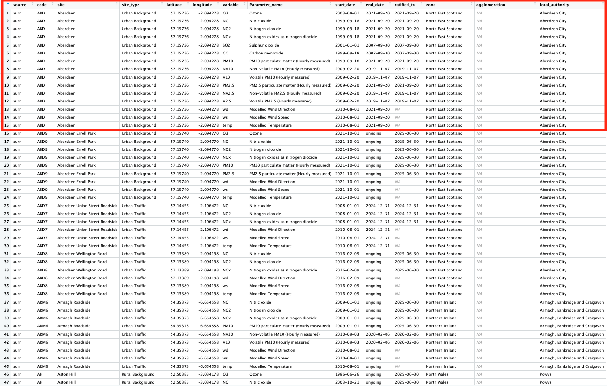
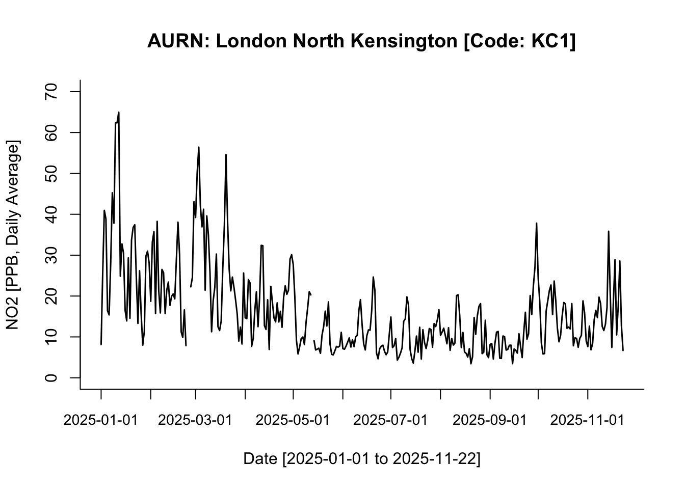
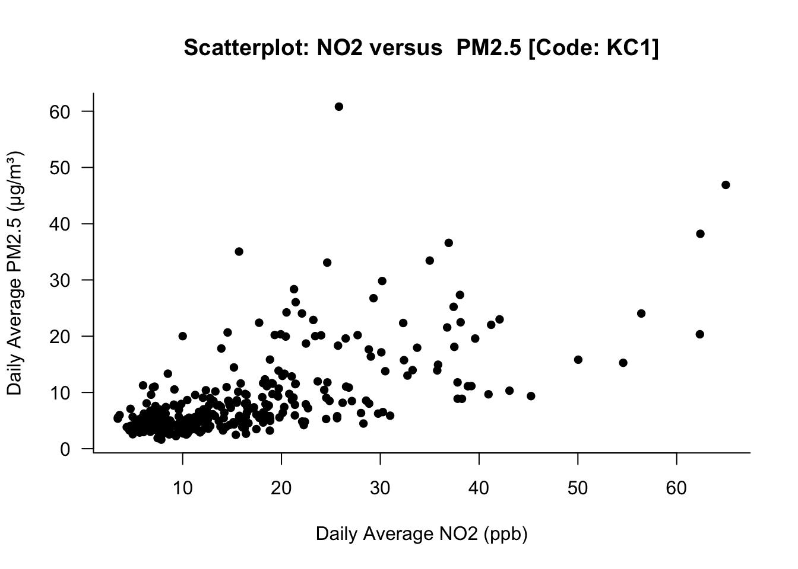

install.packages("openair")
install.packages("openairmaps")
install.packages("lubridate")Week 8: London Air Quality I
1 UK AIR Information Resource
UK AIR Information Resource https://uk-air.defra.gov.uk is a central UK resource for air-quality data and information. It provides a lot of information on air pollution in the UK: current measurements, forecasts, monitoring network details, statistics, etc. There are over 1,500 sites across the UK that monitor air quality, which are extraordinarily organised into automatic and non-automatic networks i.e., with automatic networks being many pollution sites collecting hourly data, and non-automatic networks sites measure aggregated daily/weekly/monthly samples. This is extremely helpful open data source for geography students to be familiar with if you someday want to incorporate these pollution records and monitoring sites into a GIS workflow - you could map pollutant concentrations, link with demographic/health outcome layers, or design spatial models of pollution exposure.
Let’s dig into this dataset - you will see how everything from Week 1 to 7 comes full circle!
1.1 Learning outcomes
By the end of this practical, you will be able to:
- Import UK air quality data from Automatic Urban and Rural Netorks (AURN) remotely into RStudio via OpenAir Project.
- Produce basic descriptive statistics and time-series plots of any air pollutant.
- Quantify and visualise the correlation between selected air pollutants.
- Fit a simple linear regression model for predicting a restricted set of air pollutants.
- Interpret basic output in the context of air quality in London.
1.2 Installation of OpenAir and OpenAirMaps
Openair is an R package primarily developed for the analysis of air pollution measurement data for general use in the atmospheric sciences. The package consists of many tools for importing and manipulating data, and undertaking a wide range of analyses to enhance understanding of air pollution data. It gives as remote access, freely, to all UK air pollution networks to have the data at our disposal.
To install a package in R/RStudio, we can use the install.packages() function. Let us install the following packages - openair and openairmaps. We will also install the package lubridate to get access to additional function to deal with dates for time series.
Let us install the 3 packages:
After installing both packages, we will need to active them in order to use their functions. This can be done using the library() function. Let us process to activating these packages:
library("openair")
library("openairmaps")
library("lubridate")
Attaching package: 'lubridate'The following objects are masked from 'package:base':
date, intersect, setdiff, union1.3 Accessing UK air pollution data
1.3.1 Site-level information - AURN
The UK has a surprisingly large amount of air quality data that is publicly accessible. The first order of things is to understand exactly what air pollution monitoring sites are availabile (also called Automatic Urban and Rural Networks (AURN)), and what air pollution contaminants do they measure. We can access the details of air pollution monitoring sites using the importMeta() function.
Let us pull these details and store in a data frame:
# view list of all points
all_airpollution_aurn <- importMeta(source = "aurn", all = TRUE)
# view data frame
View(all_airpollution_aurn)This shows details of what each air pollution monitor station in the UK is measuring - let us examine the image closely:

The following columns code, site and latitude & longitude are key information that tells as the unique identifier, name and geographical position of these air pollution monitoring stations in the UK, respectively.
The columns variable and Parameter_name contain the shorthand notation and actual name, respectively, of the air pollution contaminant being measure.
The columns start_date and end_date refer to when that monitoring network started, whether if its ongoing or if its retired. The end_date shows if its still ongoing, or if its retired.
You can visualise the spatial distribution of these sites that are currently active using the networkMap() function
# map of all air pollution monitors
networkMap(source = "aurn", control = "site_type", year = 2025)1.3.2 Air pollution information
We explored details about the networks. Now, let us extract the actual pollution measures from the networks themselves - daily averages. The network of focus are at the following locations:
- London North Kensington (Code: KC1)
We will extract the following parameters as an example:
- Nitrogen Dioxide (
no2) - Nitrogen Oxide (
nox) - Particulate matter (
pm2.5) - Particulate matter (
pm10)
We can extract information into a data frame by using the importAURN() function. Let us pull the record available records in 2025:
air_KC1 <- importAURN(
site = "KC1",
year = 2025,
data_type = "daily",
pollutant = c("no2", "nox", "pm2.5", "pm10"))Show the first 10 rows:
head(air_KC1, n = 10)# A tibble: 10 × 8
source date site code no2 nox pm2.5 pm10
<chr> <dttm> <chr> <chr> <dbl> <dbl> <dbl> <dbl>
1 aurn 2025-01-01 00:00:00 London N. Kensingt… KC1 8.14 8.49 3.25 5.68
2 aurn 2025-01-02 00:00:00 London N. Kensingt… KC1 25.6 29.0 5.43 9.3
3 aurn 2025-01-03 00:00:00 London N. Kensingt… KC1 41.0 51.1 9.67 13.0
4 aurn 2025-01-04 00:00:00 London N. Kensingt… KC1 38.9 52.8 11.1 13.9
5 aurn 2025-01-05 00:00:00 London N. Kensingt… KC1 16.4 18.8 2.66 3.48
6 aurn 2025-01-06 00:00:00 London N. Kensingt… KC1 15.4 16.5 2.47 4.45
7 aurn 2025-01-07 00:00:00 London N. Kensingt… KC1 28.3 32.2 4.48 7.41
8 aurn 2025-01-08 00:00:00 London N. Kensingt… KC1 45.3 66.0 9.36 14.4
9 aurn 2025-01-09 00:00:00 London N. Kensingt… KC1 37.8 45.4 11.8 19.6
10 aurn 2025-01-10 00:00:00 London N. Kensingt… KC1 62.3 148. 20.3 27.0 Data is never perfect! You will see that there is a lot of missing records across the period, and the fact that a network (i.e., KC1) has no data on PM10 throughout 2025. Anyways, we now have our dataset - let us analysis it!
1.4 Analysing UK air pollution data
1.4.1 Time-series plot
A time series plot is a graph that visualizes data collected in a sequence over time, with time on the horizontal (x-axis) and the measured variable on the vertical (y-axis). It is best used to identify trends, cycles, and patterns in data, such as economic fluctuations, weather changes, website traffic, or, in our case, changes in air pollution. These plots allow for analysis and forecasting by showing how a variable changes over specific time intervals like hours, days, months, or years.
All the basic building blocks for building a graph from scratch was covered in Week 5 (see here) - all of this comes full circle in this tutorial.
First, we need to make sure the date column is a proper calendar/date format by using the as.Date(), and by stating within that function, that the format of the date is in YYYY-MM-DD as “%Y-%m-%d”:
air_KC1$date_formatted <- as.Date(air_KC1$date, format = "%Y-%m-%d")
# class() confirms if the column is a date formate
class(air_KC1$date_formatted)[1] "Date"Now that its confirmed as a date format - we can proceed to create a time series plot specifically for NO2 at that location.
We are going to use the plot() to create the graphical output, and axis.Date() to apply cosmetic changes to the x-axis which measures the time:
plot(air_KC1$no2 ~ air_KC1$date_formatted,
type="l",
lwd=1.5,
main="AURN: London North Kensington [Code: KC1]",
ylab = "NO2 [PPB, Daily Average]",
xlab = "Date [2025-01-01 to 2025-11-22]",
ylim = c(0, 70),
bty = "L",
xaxt = "n")
axis.Date(
side=1,
at=seq(min(air_KC1$date_formatted), max(air_KC1$date_formatted), by = "months"),
format="%Y-%m-%d",
cex.axis = .9,
labels = TRUE)
Note
Interpretation: This is a face-value interpretation, and as you can see, it is quite difficult to discern clear patterns in NO₂ between 01/01/2025 and 22/11/2025. But broadly speaking—and ignoring the jagged spikes—the overall pattern suggests a gradual decline in NO₂ levels from the start of the year until early September. From the beginning of September onwards, NO₂ levels begin to increase gradually.
1.4.2 Descriptive analysis of time-series data
We have covered descriptive statistics quite extensively at this point - so the programming aspect of such analysis should be second nature to you now! All we are doing is using the summary() and, or tapply() to compute the mean and standard deviation. Please refer to Week 4 because it was covered quite extensively!
It is possible to calculate the overall mean and standard deviation of NO2 across the time period by simply using the summary() function along with the standard deviation using sd() function:
summary(air_KC1$no2, na.rm = TRUE) Min. 1st Qu. Median Mean 3rd Qu. Max. NA's
3.435 8.214 13.085 16.369 20.581 64.969 3 sd(air_KC1$no2, na.rm = TRUE)[1] 10.82045
Important
Interpretation: The overall mean air pollution levels for NO2 (in 2025) in London North Kensington was 16.399ppb (with one SD of ±10.82ppb). The overall range in the distribution is 61.534ppb where the lowest observed value is 3.435ppb (minimum) and the highest observed value is 64.949ppb (maximum)
While, this is basically a summary of the overall description of the distribution of NO2 - sometimes, its inappropriate or bad practice to summarise time series data in that fashion. It is best practice to report such summaries for time series data in a quarterly, or monthly manner, to see if their a distinct pattern that is temporally apparent.
For instance, we can produce quarterly summaries by grouping the records accordingly into quarters by using the quarters() function on the formatted date column to generate a quarterly indicator:
air_KC1$quarters <- quarters(air_KC1$date_formatted)Notice that new column was generated with each date defined as Q1, Q2, Q3 or Q4. Now, we can use tapply() function to compute the mean and standard across the quarters:
tapply(air_KC1$no2, air_KC1$quarters, mean, na.rm = TRUE) Q1 Q2 Q3 Q4
26.77046 13.28455 10.37344 14.77160 tapply(air_KC1$no2, air_KC1$quarters, sd, na.rm = TRUE) Q1 Q2 Q3 Q4
13.091599 6.787649 5.578397 6.372888 If you want these results to be further broken down by month - it can be done but the coding is little bit involved. Unlike the quarters() function, RStudio does not have a function for months. So we will need to be a bit creative and pull the month value from the actual date column to group the dataset accordingly.
In the date column (i.e., YYYY-MM-DD) the month string is contained as the 6th and 7th character in that string. We are going to extract the 6th and 7th character to create the needed month column for this analysis to get the monthly means of NO2.
Here, we can use the substr() function, and tell it to select the 6th and 7th string only in the date column.
air_KC1$months <- substr(air_KC1$date, 6, 7)We got what we want - now, we can use tapply() function to compute mean and standard deviation across those months:
tapply(air_KC1$no2, air_KC1$months, mean, na.rm = TRUE) 01 02 03 04 05 06 07 08
29.177950 23.140038 27.407827 18.379460 11.217195 10.256994 9.935942 10.246371
09 10 11
10.956836 14.084862 15.697202 tapply(air_KC1$no2, air_KC1$months, sd, na.rm = TRUE) 01 02 03 04 05 06 07 08
15.146743 9.073397 13.459940 6.740908 5.638085 4.838321 4.283866 4.707091
09 10 11
7.427567 5.419553 7.498650 Not too shabby!
1.4.3 Correlation
So far, we have been analysing a single continuous measure, univariably. Here, we going to analysis two variables together to show a basic correlation.
A correlation is a measure that describes the strength and direction of a relationship between two numerical variables. A correlation can have a value that ranges anywhere from: -1 to 0 to +1, where a positive value is a positive correlation which means that as one variable increases, the other tends to increase, whereas a negative value is a negative correlation means that as one variable increases, the other tends to decrease.
Without going too deep into the subject of correlations - its basic understanding in the context of air pollution helps identify:
- Shared pollution sources
- How pollutants interact
- Whether one pollutant can help predict another
For example, let us look at the correlation between NO2 and PM2.5 - perhaps, there could be some relationship? The first thing is to create a scatterplot showing the bivariable visually:
plot(air_KC1$no2, air_KC1$pm2.5,
xlab = "Daily Average NO2 (ppb)",
ylab = "Daily Average PM2.5 (μg/m³)",
main = "Scatterplot: NO2 versus PM2.5 [Code: KC1]",
bty = "L",
pch = 16,
las = 1,
)
Go to Week 5 as we covered the coding on creating graphs extensively!
What this image illustrates - if there’s an increase in the NO2 levels, it shows as positive increase in PM2.5 as well. This relationship is only shown visually. We can quantify the strength by performing a correlation test between NO2 versus PM2.5 using the cor.test() function:
# use diff() to remove trends, seasonality
cor.test(diff(air_KC1$no2), diff(air_KC1$pm2.5))
Pearson's product-moment correlation
data: diff(air_KC1$no2) and diff(air_KC1$pm2.5)
t = 8.2481, df = 317, p-value = 4.347e-15
alternative hypothesis: true correlation is not equal to 0
95 percent confidence interval:
0.3255604 0.5067652
sample estimates:
cor
0.4203449
Important
Interpretation: The correlation between the changes in NO₂ and the changes in PM2.5 is 0.4206. This indicates a moderate positive relationship i.e., When NO2 increases from one time point to the next, PM2.5 also tends to increase, and when NO2 decreases, PM2.5 tends to decrease. The p-value is extremely small (way below 0.05), meaning that the probability of observing a correlation this strong (or stronger) is not by chance, and therefore the correlation is statistically significant.
1.4.4 Linear regression
A linear regression is a statistical method used to describe how one variable (the outcome) changes in relation to another variable (the predictor).
It fits a straight line to the data: Outcome = Intercept + Slope × Predictor + Error
The slope tells you how much the outcome changes for every one-unit increase in the predictor. Suppose you want to understand how NO2 and PM2.5 relate to each other at a monitoring station.
- The correlation tells you whether they move together (e.g., correlation = 0.4206).
- But, a linear regression goes further and quantifies how much PM2.5 changes when NO2 changes.
Without going into too much details about linear regression - let us use a simple example, and fit a linear model regression model using lm() function:
modelfit <- lm(diff(air_KC1$pm2.5) ~ diff(air_KC1$no2))
summary(modelfit)
Call:
lm(formula = diff(air_KC1$pm2.5) ~ diff(air_KC1$no2))
Residuals:
Min 1Q Median 3Q Max
-46.552 -1.695 0.074 1.921 30.339
Coefficients:
Estimate Std. Error t value Pr(>|t|)
(Intercept) 0.005887 0.310406 0.019 0.985
diff(air_KC1$no2) 0.324091 0.039293 8.248 4.35e-15 ***
---
Signif. codes: 0 '***' 0.001 '**' 0.01 '*' 0.05 '.' 0.1 ' ' 1
Residual standard error: 5.544 on 317 degrees of freedom
(7 observations deleted due to missingness)
Multiple R-squared: 0.1767, Adjusted R-squared: 0.1741
F-statistic: 68.03 on 1 and 317 DF, p-value: 4.347e-15The above code lm(diff(pm25) ~ diff(no2)) means that we are modelling the change in PM2.5 as a function of the change in NO2. From the printed output, the explore the following results:
- Intercept (0.005887): The intercept is essentially zero and is not statistically significant (p = 0.985 which is bigger than 0.05). This means that when there is no change in NO2, the expected change in PM2.5 is 0.005887 which is effectively zero.
- Slope for NO2 [0.324 (p < 0.001)]: The slope is the key result - here, for every unit increase in NO2 will result in PM2.5 to increases on average by 0.324 µg/m³. This increase is significant because its p-value is below 0.05. A small note - this confirms a moderate, positive, and statistically significant short-term association between the two pollutants, and it aligns with the correlation result we previously obtained (0.4206).
- Model fit (0.1741): The R² of 0.1741, which means that 17.41% of the variation in changes in PM2.5 is explained by changes in NO2. Generally, its a poor model if this is below 20%. 20-40% is moderate; 40-70% is good; and anything above 70% is an excellent model.
That is how you perform a regression model - the main resul of interest is the slope and its p-value.
2 Worksheet Four: London Air Quality I
In this worksheet, the aim of this worksheet is conduct exploration analysis of UK air pollution through the following tasks:
- The following information about the TWO AURN sites London has been listed accordingly:
- Camden Kerside (Code: CA1)
- London Bloomsbury (Code: CLL2)
- Data type: Daily
- Particular matter (
pm2.5) - Particular matter (
pm10) - Year (
2025)
From the above information, use the importAURN() code to extract all 2025 measure for PM2.5 and PM10 from CA1 and CLL2 locations. What is the code syntax for this operation?
HINT: The code syntax should resemble the follow: importAURN(site = , year = , data_type = , pollutant = c())
- Create TWO time series plot specifically for PM2.5 for both locations CA1 and CLL2
HINT: The x-axis should be the calendar dates - remember to format the dates accordingly using as.Date() and format = “%Y-%m-%d”
- Calculate the overall mean and standard deviation specifically for PM2.5 for both sites for the entire year, and then for each quarter - present these values in a simple table. What would be the appropriate interpretation?
HINT use the quarters() to group the records accordingly into quarterly chunks. Use the tapply() to perform the descriptive analysis by groups.
- Investigate the relationship between the two variables PM10 and PM2.5 for one of the sites of your choice. For either Camden Kerbside or London Bloomsbury do the following:
- Scatterplot showing PM10 versus PM2.5
- Correlation test for PM10 versus PM2.5
- Simple linear regression model
Provide the necessary interpretation of their relationship.
HINTS: Because the data points are time-series - make sure to use the diff() in the cor.test() or lm() to de-trend observations, as well as remove any autocorrelation between lagged values for both PM2.5 and PM10.
Important
Submission Deadline: Thursday 27th November, 2025
The above date is a hard deadline! You need to submit the work via Moodle, through the GEOG0186: LONDON page.
Please download the answer sheet HERE. You can use the answer sheet for this worksheet to insert your answers into the appropriate sections. Please note that this Worksheet 4, in particular will only be marked with individualised feedback to the script.